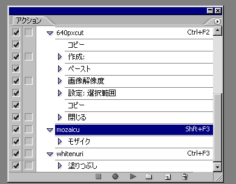
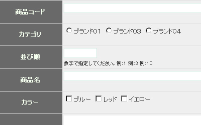
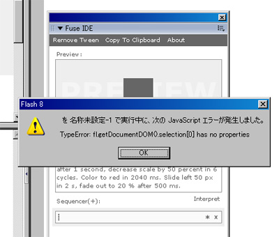
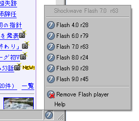
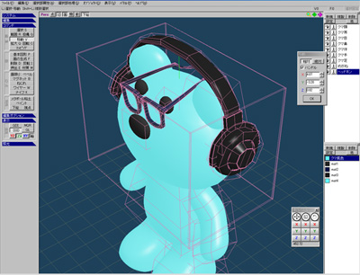

gotoandlearn.com
・Creating 3D Carousels
このビデオチュートリアルの「Creating 3D Carousels」を
そのまんま試してみた。
素材のニワトリ目覚まし時計はかれこれ１５年ぐらい愛用しています。
ココ最近、昼と夜が逆転した生活になってしまってるので、
本来の健康的な生活に戻そうと試みてみるが、
なかなか戻りません。。
早く寝て早く起きる生活にせねば。
gotoandlearn.com
・Creating 3D Carousels
このビデオチュートリアルの「Creating 3D Carousels」を
そのまんま試してみた。
素材のニワトリ目覚まし時計はかれこれ１５年ぐらい愛用しています。
ココ最近、昼と夜が逆転した生活になってしまってるので、
本来の健康的な生活に戻そうと試みてみるが、
なかなか戻りません。。
早く寝て早く起きる生活にせねば。
2007年10月29日
からほりまちアート
ここ最近超インドアな私に、お外へ出してくれる嬉しいお誘いがあったので
喜んで行ってきました。
とっても情緒あふれる町並みでした。
目的はボスヒコ氏のライブペインティング。
龍がめちゃくちゃカッコイくて、家に帰ってから自分でも描いてみたが
全く描けなくて自暴自棄に陥ったのでありまする。
という心境をFLASHにしてみたが、
これまた大苦戦でした。。
真ん中らへんにカーソルを当てると
バンナが浮き上がってくるぽ！
作るのに非常に時間が掛かった。
そして、非常に力技なActionScriptしか書けない。。
がんばらんとなー。
勉強になったけど！
2007年10月25日
気が早いけど、今年こそバンナ優勝！！
毎年言ってますが。。。
1回戦vsホンマン 黄金の左ストレートKO
2回戦vsシュルト 黄金の左ストレートKO
決勝vsバダハリ 黄金の左ストレートKO
こんな夢を見てます。。
トーナメント関係なしに、
バンナvsバダハリが見たいなー。
1,2回戦と巨人相手がきついけど、
左腕に埋められたボルトも取ったことだし、
あの左が完全復活してるのなら、
夢が現実に！？
2007年10月24日
縦30px横40pxのビットマップをステージ上に並べていって、
ロールオーバーでビットマップ（ムービークリップ）を消す。
ってのをactionscriptで組もうと思って、何とか目的までは達成できた！！
世は満足じゃ！！
2007年10月23日

photoshopのアクション機能を初めて使用したのですが、
これは便利ですね。
単純作業で大量の画像を扱う時にもってこいだ。
ちなみに各アクションがしてくれる機能は、
・640pxcut [Ctrl+F2]
選択範囲をコピーして、新規画像作成して、画像解像度(横)を640pxに設定して、
変更した画像を選択して、コピーして、新規画像を閉じる。
→貼り付け[Ctrl+V]で作成した画像640px(横)が貼り付けれる。
・mozaicu [Shift+F3]
→選択範囲にモザイクをかける。
・whitenuri [Ctrl+F3]
→選択範囲を白く塗りつぶす。
作業がだいぶ楽チンになった。
といっても、大量に作業が存在することは変わらないが。。。
今夜は徹夜ですたい！
2007年10月22日

<input type='checkbox' name='color[]' value='blue'>
<input type='checkbox' name='color[]' value='red'>
<input type='checkbox' name='color[]' value='yellow'>
PHPでcheckbox内の値の受け渡しメモ。
nameに[]をつけると、配列としてPHP側に受け渡る。
PHP側で、
$color = $_POST["color"]);
のように受け取ると、
変数colorは配列となっている。
配列をカンマ区切りの文字データにしてやりたい時は、
$color = implode(",", $_POST["color"]);
のようにimplode関数を使用する。
例えば、ブルー、レッドにチェックを入れて、POSTなりGETし、
implode関数をかますと、
「blue,red」
のようになってるわけだ。
毎回忘れててネットで調べてるのでメモメモ。
2007年10月21日
Fuse IDE
Fuse kitのための便利ソフトです。
実際使ってみてとっても便利なんだけど、
エラーがぁぁぁぁぁ。。。。。出まくる。。

[TypeError:fl.getDocumentDOM().selection[0] has no properties]
エラーが出るものの正常に使えてるみたいなんだけど、
エラーが邪魔すぎて使う気が失せてしまう。。
調べてたけど、回避方法が分からない。。
oh… my… god….
ああ…私…神…。
海外サイトを翻訳機能で訳してたら
ちょっと噴いた( ´∀`)/~~
2007年10月19日
PHP + MySQLでカテゴリ分けが出来て、
カテゴリ自体が画像表示可能で、
とってもシンプルでカスタマイズ出来そうな
フリーショッピングカートをひたすら探したけど。。。
■シンプルであるが、求めてる機能は無かった・・・
フリーCGI 無料ショッピングカート CGI's
HAL NETWORKS
自分が思うようなのは無かった。。。
自分で１から作るとなると、とっても鬱です。。
actionscriptの勉強に時間をどんどん費やしたかったけど
しばらく無理そうだな。。。ＴＴ
まあ、アンジェラ・アキ「TODAY」聴いてがんばるぜー！
2007年10月18日
フレームワーク（メモ）
PEAR
Zend Framework
CakePHP
Mojavi
Phrame
ベタ書きプログラミングが主なPHPだからこそ、
身近に修得できそうな気がしてたんですが、
クラスライブラリやフレームワークを使用しての
開発が主となっていきそうな気がします。
オブジェクト指向ってやつでしょうか。。
とっても苦手です。
10分で作るCakePHPアプリ for Windows
動画でCakePHPアプリ制作が見れます。
システム系は気乗りしないんですが、
PEARのクラスライブラリだけでも
一度しっかり勉強しなくては！！
ＩＴ系の流れってホント早い。
2007年10月16日
↑のテスト方法として、
Flash Playerをヴァージョン8未満へ変更する。
■Firefoxプラグイン「Flash Switcher」を使用する
※Flash Playerのバージョン切り替えが可能に。
ダウンロードurl
http://www.sephiroth.it/firefox/
ダウンロードしてきたファイルは
「flash_switcher_1.0.0.xpi」何これ？？なわけだが、
Firefox向けのパッケージ？？
インストール方法は簡単で、Firefoxを立ち上げて
「flash_switcher_1.0.0.xpi」をドラッグ＆ドロップするだけ。
Firefoxを再起動したら、
右下の方に、

んな感じにインストールされてました。
これで、SWFObjectのテストが簡単に♪
10月も半分が過ぎましたね。
今月が山田な私にとっては、日が過ぎるのがとっても早い。
がんばらなきゃいけないんだけど、ちょっぴりガス欠モード。。
そんなガス欠モードな時に本屋で目についたマンガ2冊。
「２８歳、ＳＥ、独身、彼女ナシ、そして、ちょっぴりオタク…。
オタクなサラリーマン＝「オタリーマン」の爆笑・生き様を綴るコミックエッセー。」
これは・・・他人事ではない。。汗
てか、他人事に全く思えず、2冊とも読んじゃいました！
ホッコリ癒し系なマンガですね。
SE・プログラマな人は是非読んでみてほしいです。
共感できる部分盛りだくさんかも？

 嫌いじゃないんだけど・・・・・ 「ネットで見るから面白かった」
嫌いじゃないんだけど・・・・・ 「ネットで見るから面白かった」 どこで笑うんですか。。。
どこで笑うんですか。。。

 ときには意味を考えない。 おバカなだけじゃない この方はそんなにオタクではないと思う
ときには意味を考えない。 おバカなだけじゃない この方はそんなにオタクではないと思う
2007年10月15日
「メタセコイアからはじめよう」って本に従い、
Redqueenっていうレンダリングソフトでレンダリングしたが、
テクスチャが反映されず、のっぺらぼうになってもうた。。
今日、電気屋いってきたら、Shade Basicが12000円ぐらいで
売っていたんだが、手を伸ばしてみたものの、支出は抑えろ！！
って脳が指令を出したんで買うの辞めときました。
3Dソフトも欲しいが、ペンタブも欲しい。。
■追記
テクスチャが反映されないのは、
パス指定に２バイト文字が入っていたため。
「D:\メタセコ\xxxx.jpg」
みたいに。
「D:\metaseco\xxxx.jpg」
のように1バイト文字のディレクトリにしたら
テクスチャが表示されました。
格闘技ファンなら知ってると思うんですが、
あの総合格闘技界の60億分の１と言われているヒョードルの絵。
格闘家なのに、こんなに上手くて優しい絵が描けるとは・・・
そんなヒョードルですが、UFCとの契約は成立せず、
ロシアにてM-1という団体で試合をする予定らしいです。
ヒョードルの試合を見るたびに、
ヒョードルの試合へ望む姿勢を知るたびに、
格闘技の枠を超えた人間的な凄みを感じます。
そして、自分も頑張るぞ！っていう勇気が沸いてきたり、
モチベーションが高まったりします。
ヒョードルは3兄弟です。
（真ん中はアレキサンダー、一番下はまだデビューしていない）
亀田家も3兄弟です。
先日の内藤vs亀田の試合を見て、
同じ3兄弟でも、偉い違いだなっと。。
2007年10月13日
FLASHで3D表現がしたい！！
と思い、色々調べてて、
five3D
たるモノを発見。
今回は同封されているサンプルの文字を変えただけです＾＾；
てか、それ以上のことをするには知識が足らなすぎるTT
他にFLASH3D表現のための
「Papervision3d」たるモノがあるらしい。
Papervision3d + ActionScript3.0が強力らしい。
がしかし、僕はActionScript2.0とActionScript3.0の違いが分からない。。
知識を入れようとすればするほど、
FLASHの奥の深さに圧倒されてKO寸前です。。
それと、調べれば調べるほど海外サイトへと導かれるのですが、
僕は英語読めません・・・TT
はぁ・・・
2007年10月12日
友達にFuseKitたるクラスライブラリを教えてもらい早速試しました。
説明サイトを余り読まずに手を出してしまったためか、
凄い時間がかかった。。
やってることは写真の切り替え２パターンだけですが。。
でも、慣れるとこれは手放せないクラスライブラリになりそうな予感。
以下自分用メモリンク
Fuse Kit本家
2007年10月11日
ラシーンに乗ってアンジェラ・アキを聴く。
ここ最近の一番落ち着く方法です。
がしかし、落ち着きすぎて黄色点滅信号で
停止してたりしてなかったり。。。。
こんな経験ありますよね・・・|-`).｡oO(･･･)
2007年10月10日
丸を４個決めうちで、ボタンにて動きをつける。
移動は、
this._x += (xPoint01 - this._x)/3;this._y += (yPoint01 - this._y)/5;
色は
myColor01 = new Color(circle01_mc);myColor01.setRGB(0x316D95);
ブルブルは、
var nRndX = Math.random()*10-5;xPoint01 += nRndX;
ブルブル＋移動が、思うような動きではない。。
今回、丸を４個決めうちだけど、これをランダムや数増大とか
させると、スクリプトが偉いことになりそう。
2007年10月09日
FLASH Creative Workshopという本に従いそのまんま作成。
本に書いてあるとおりになぞるだけだけど、
凄い時間と労力が、かかったです。
しかし、こういうFLASHページの組み込み方法というのは
凄い勉強になった！
タイムラインとアクションスクリプト半々ぐらいの割合です。
こういうFLASHを自分の力で作れるようになるのがとりあえずの目標でっす。
2007年10月07日

3DCGに以前から興味ありありだったんですが、
3D系ソフトは値段高いし、なんか敷居が高そうで、
手を出してなかったんです。
が、しかし、昨日本屋で「メタセコイアからはじめよう！」たる本を見つけて
3DCGに足を踏み込むことにしました！
（メタセコイア:フリーソフト http://www.metaseq.net/)
x軸、y軸、z軸の線見ただけでちょっと満足♪
遠近法というか、パースというのかな。
そういうもん見るとちょっとワクワクするのは、
3ヶ月ほどデッサン習ったおかげです。
3DCGはゆっくりマッタリ勉強していく予定です。
 読んだら実践で覚えるしかありません。
読んだら実践で覚えるしかありません。 初心者向き ３Dを始める方は迷わずこの本を買うと吉！
初心者向き ３Dを始める方は迷わずこの本を買うと吉！フリーフォント集を買ってきました。
今までフリーフォントはほとんど使用しなかったけど、
やっぱり使いこなさないと幅が広がらないと思って。。
しっかし、フォント数が多すぎて、選ぶだけで時間が偉いかかる。。
それと、1byteフォントと2byteフォントの違いで、
特殊なタイプ入力をしなければいけないのがダルイ。。。
そんなダルさを解消してくれる、
↓こんな便利なサイトがあった。
1バイトカナフォント用コード変換
フォントを使ってページデザインしてみたけど、
フォントパワーはやはり凄い！
でも、こっからどのように良く見せるかがWEBデザイナーの腕なんだな。。。
何かが足りん。何が足りん？
 けっこうお得 他のフリーフォント集本以下
けっこうお得 他のフリーフォント集本以下2007年10月06日
天気が良かったせいか、明日香は人だらけだった。
地元民から言わせると石舞台を見て何が楽しいんだろうか。。。
とはいえ、ハイキングやドライブすると凄く気持ちい場所です。
人の多いところは避けて、ちょっと山奥の方へ進み
ラシーンを配置して絵を描いてきました。
かなりラフな絵ですが。。（細かい部分を描く技術がないTT）
ヒガンバナがところどころに咲いていて、
赤色と黄緑のマッチングが綺麗でした。
それ以上に我がラシーンがカッチョ良かったです＾＾；
actionscriptにてアニメーションするサンプルflaファイルを
色々と見ていると三角関数の出番が多いこと。。
サインコサインタンジェントって中学だっけ。高校だっけ。
このわけの分からん数学は正直関わりたくないって思った覚えがある。。
理解するとまで行かなくても、
三角関数を使うと、どのようなアニメーション効果が
可能になるかとかの把握だけはしておきたいところDA。
2007年10月05日
モーショントゥーインを使用したフレームアニメーションから
ActionScriptのTweenクラスの使用を癖付けていきたいと思いまする。
FLASHに力を入れて勉強していますが、勉強すればするほど
自分が無知なことにショックを受けてますが頑張ります。。
１０月に入ってもう月の6分の１が過ぎてしまった。
今月は前社の仕事を家でやることになり、
全時間を勉強に費やすのは厳しいけど、
この一ヶ月でどこまで知識をつけられるかが
人生の分け目となりそうです！
2007年10月03日
右のリンクの下部分に張っている
「Flash Creative Workshop」にてFLASHの勉強＆練習してたんですが、
止まるべき場所で止まらない？？な問題にぶち当たりまして
何時間も原因探ししても分からなくて
FLASH自体のソフトがバグってんのか？？( ﾟДﾟ)
と、お手上げ状態。
で、「世にも奇妙な物語」がテレビでやってたんで、
ソレ見てからFLASHにもう一度向き合うと、
「gotoAndStop」であるべきところが、
「gotoAndPlay」であったというオチ。。。
俗にいうケアレスミスってやつですね(´･ω･`)/~~
改めてプログラムは正直者であると実感したわけでありまする。
■背景画像の畳は
http://macototo.cool.ne.jp/junics/dark_tatami.html
こちらを参考にさせて頂きました。
photoshopって改めて凄いソフトだなと思いました。
2007年10月01日
引越し完了しますた。
やっとこさダンボールから荷物を取り出して配置しての
大変な作業も終了し、ほっと一息。
後は役所関係の手続きがという山が残ってるが。。
FLASHはnow loadging機能つけたり、
今までの復習も込めて、おさらい的に作成。
ブログサブタイトルも兵庫から奈良にかえなくては。。
SEO意識して兵庫っていう文字を入れてたんだけど、
「兵庫」「WEBデザイナー」でyahooにて28位。。。
「兵庫」「 WEBデザイナーブログ」だとyahooにて1位！！
まあ、アクセス解析見てると、そういう文字検索で来る人は
いないんですけどね＾＾；


{kind=link}
{kind=link}
{kind=link}
{kind=link}